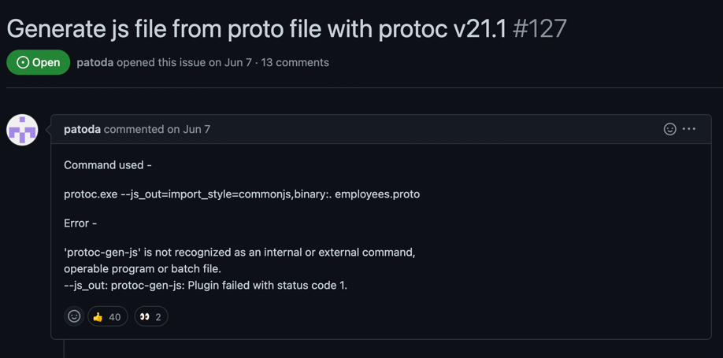

Why buf?
Let’s build a grpc web app
protoc -I./proto/ --go_out=paths=source_relative:backend/pkg/gen/proto/elizav1 eliza.proto
protoc -I././proto/ --go-grpc_out=paths=source_relative:backend/pkg/gen/proto/elizav1 eliza.proto
grpc
├── proto
│ └── eliza.proto
+ ├── backend
+ │ └── main.go
+ │ └── pkg
+ │ └── gen
+ │ └── proto
+ │ └── elizav1
+ │ ├── eliza.pb.go
+ │ └── eliza_grpc.pb.go
protoc -I./proto/ --go_out=paths=source_relative:backend/pkg/gen/proto/elizav1 eliza.proto
protoc -I././proto/ --go-grpc_out=paths=source_relative:backend/pkg/gen/proto/elizav1 eliza.proto
protoc -I././proto/ --js_out=import_style=commonjs:frontend/src/gen eliza.proto
protoc -I././proto/ --grpc-web_out=import_style=typescript,,mode=grpcwebtext:frontend/src/gen eliza.proto
grpc
+ ├── Makefile
├── proto
│ └── eliza.proto
├── backend
│ └── main.go
│ └── pkg
│ └── gen
│ └── proto
│ └── elizav1
│ ├── eliza.pb.go
│ └── eliza_grpc.pb.go


protoc-gen-js

- https://github.com/grpc/grpc-web/issues/704 which is a duplicate of
- https://github.com/protocolbuffers/protobuf-javascript/issues/105 which is a duplicate of
- https://github.com/protocolbuffers/protobuf-javascript/issues/127 and the issue is to
protoc-gen-js

solution

protoc-gen-grpc-web
- Requires envoy proxy
- Get envoy proxy installed
- set up config, run envoy, points at grpc service
grpc
+ ├── envoy.yaml
+ ├── envoy.Dockerfile
├── Makefile
├── proto
│ └── eliza.proto
├── backend
│ └── main.go
│ └── pkg
│ └── gen
│ └── proto
│ └── elizav1
│ ├── eliza.pb.go
│ └── eliza_grpc.pb.go
+ └── frontend
+ ├ App.tsx
+ └── src
+ └── gen
+ ├── eliza_grpc_web_pb.js
+ ├── eliza_pb.d.ts
+ ├── eliza_pb.js
+ └── ElizaServiceClientPb.ts


Finally
grpc
├── envoy.yaml
├── envoy.Dockerfile
├── Makefile
└── demo
└── gen
└── eliza
└── v1
└── eliza.proto
├── backend
│ └── main.go
│ └── pkg
│ └── gen
│ └── proto
│ └── elizav1
│ ├── eliza.pb.go
│ └── eliza_grpc.pb.go
└── frontend
├ App.tsx
└── src
└── gen
├── eliza_grpc_web_pb.js
├── eliza_pb.d.ts
├── eliza_pb.js
└── ElizaServiceClientPb.ts
grpcurl --plaintext localhost:8071 buf.connect.demo.eliza.v1.ElizaService/Say
List of issues encountered
What about buf?
What about buf?
protoc -> bufgrpc -> connectenvoyMakefile
What do we get?
connect
- ├── envoy.yaml
- ├── envoy.Dockerfile
- ├── Makefile
+ ├── buf.gen.yaml
└── demo
└── gen
└── eliza
└── v1
└── eliza.proto
├── backend
│ └── main.go
│ └── gen
│ └── eliza
│ └── v1
│ ├── eliza.pb.go
- └── eliza_grpc.pb.go
+ └───── elizav1connect
+ └─────eliza.connect.go
└── frontend
| ├ App.tsx
| └── src
| └── gen
| └── demo
| └── eliza
| └── v1
+ ├── eliza_connectweb.ts
+ ├── eliza_pb.ts
- ├── eliza_grpc_web_pb.js
- ├── eliza_pb.d.ts
- ├── eliza_pb.js
- └── ElizaServiceClientPb.ts
Where are the differences ?
- # envoy.yaml
---
- admin:
- access_log_path: "/tmp/admin_access.log"
- address:
- socket_address:
- address: 0.0.0.0
- port_value: 9901
- static_resources:
- listeners:
- - name: main-listener
- address:
- socket_address:
- address: 0.0.0.0
- port_value: 8082
- filter_chains:
- - filters:
- - name: envoy.http_connection_manager
- config:
- stat_prefix: ingress_http
- codec_type: AUTO
- route_config:
- name: local_route
- virtual_hosts:
- - name: local_service
- domains:
- - "*"
- routes:
- - match:
- prefix: "/buf.connect.demo.eliza.v1.ElizaService"
- route:
- cluster: ElizaService
- max_grpc_timeout: 0s
- cors:
- allow_origin_string_match:
- - prefix: "*"
- allow_methods: GET, PUT, DELETE, POST, OPTIONS
- allow_headers: keep-alive,user-agent,cache-control,content-type,content-transfer-encoding,grpc-status-details-bin,x-accept-content-transfer-encoding,x-accept-response-streaming,x-user-agent,x-grpc-web,grpc-timeout,authorization
- expose_headers: grpc-status-details-bin,grpc-status,grpc-message,authorization
- max_age: "1728000"
- http_filters:
- - name: envoy.grpc_web
- - name: envoy.cors
- - name: envoy.router
- clusters:
- - name: ElizaService
- connect_timeout: 0.25s
- type: logical_dns
- http2_protocol_options: {}
- lb_policy: round_robin
- hosts:
- - socket_address:
- address: backend
- port_value: 8081
Where are the differences ?
- # Makefile
- proto:
- protoc -I./proto/ --go_out=paths=source_relative:backend/pkg/gen/proto/elizav1 eliza.proto
- protoc -I././proto/ --go-grpc_out=paths=source_relative:backend/pkg/gen/proto/elizav1 eliza.proto
- protoc -I././proto/ --js_out=import_style=commonjs:frontend/src/gen eliza.proto
- protoc -I././proto/ --grpc-web_out=import_style=typescript,,mode=grpcwebtext:frontend/src/gen eliza.proto
grpcurl --plaintext localhost:8091 buf.connect.demo.eliza.v1.ElizaService/Say
curl --header 'Content-Type: application/json' --data '{"sentence": ""}' http://localhost:8091/buf.connect.demo.eliza.v1.ElizaService/Say

Let’s delete more code
- using buf.build/bufbuild/eliza instead of codegen
What do we get?
connect
- ├── envoy.yaml
- ├── envoy.Dockerfile
- ├── Makefile
- ├── buf.gen.yaml
- └── demo
- └── gen
- └── eliza
- └── v1
- └── eliza.proto
├── backend
│ └── main.go
- │ └── pkg
- │ └── gen
- │ └── proto
- │ └── elizav1
- │ ├── eliza.pb.go
- │ └── eliza_grpc.pb.go
└── frontend
├ App.tsx
└── src
- └── gen
- ├── eliza_grpc_web_pb.js
- ├── eliza_pb.d.ts
- ├── eliza_pb.js
- └── ElizaServiceClientPb.ts
connect
├── backend
│ └── main.go
└── frontend
└── App.tsx
Where are the differences ?
- import { ElizaServiceClient } from './gen/ElizaServiceClientPb.js'
- import { IntroduceRequest } from './gen/eliza_pb'
+ import { ElizaService } from '@buf/bufbuild_eliza.bufbuild_connect-web/buf/connect/demo/eliza/v1/eliza_connectweb.js'
+ import { IntroduceRequest } from '@buf/bufbuild_eliza.bufbuild_es/buf/connect/demo/eliza/v1/eliza_pb.js'
Where are the differences ?
- "github.com/joshcarp/grpc-vs-connect/grpc-web/backend/pkg/gen/proto/elizav1"
+ "buf.build/gen/go/bufbuild/eliza/bufbuild/why-buf/buf/connect/demo/eliza/v1/elizav1connect"
+ elizav1 "buf.build/gen/go/bufbuild/eliza/protocolbuffers/go/buf/connect/demo/eliza/v1"
connect
├── backend
│ └── main.go
└── frontend
└── App.tsx
files blank comment code
-------------------------------------------------------------------------------
SUM:
same 4 4 22 63
modified 1 0 0 46
added 0 0 0 34
removed 11 348 734 1552
cloc --exclude-dir=node_modules --include-ext=go,js,ts,proto,yaml,Makefile --diff grpc connect
32 text files.
classified 30 files
19 text files.
classified 17 files
1: 1 unique file.
2: 2 unique files.
34 files ignored.
github.com/AlDanial/cloc v 1.94 T=0.02 s (776.9 files/s, 136106.8 lines/s)
-------------------------------------------------------------------------------
Language files blank comment code
-------------------------------------------------------------------------------
Go
same 0 0 16 42
modified 1 0 0 46
added 0 0 0 34
removed 2 92 65 629
JavaScript
same 1 2 1 7
modified 0 0 0 0
added 0 0 0 0
removed 2 157 516 490
TypeScript
same 3 2 5 14
modified 0 0 0 0
added 0 0 0 0
removed 4 88 122 340
YAML
same 0 0 0 0
modified 0 0 0 0
added 0 0 0 0
removed 2 1 0 67
Protocol Buffers
same 0 0 0 0
modified 0 0 0 0
added 0 0 0 0
removed 1 10 31 26
-------------------------------------------------------------------------------
SUM:
same 4 4 22 63
modified 1 0 0 46
added 0 0 0 34
removed 11 348 734 1552
-------------------------------------------------------------------------------
- No code generation needed
- No translation proxy needed
- No build scripts/Makefiles
- No using outdated tools